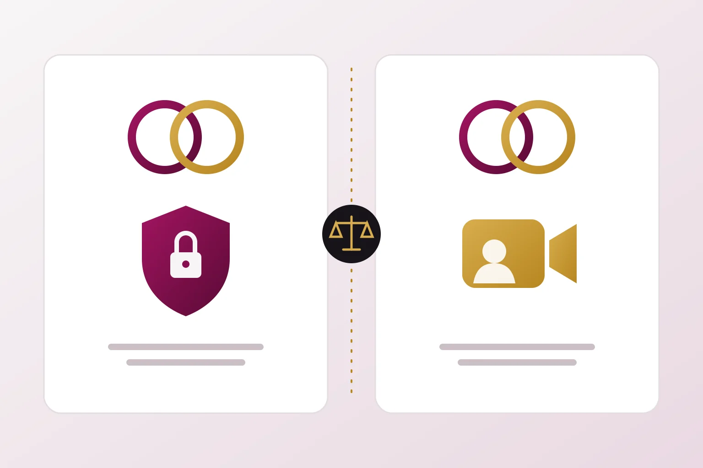

An identical word is the starting point of a trade mark analysis, not its conclusion. The goods, the customers, the strength of the mark and the direction in which each business grows decide the outcome.
Two DUO brands in the same broad industry
Duo Security built a business in multi factor authentication for enterprises. Cisco announced its acquisition on 2 August 2018 and completed it in October 2018 for about USD 2.35 billion. Google announced Google Duo, a consumer video calling app, in May 2016 and released it worldwide on 16 August 2016. For roughly six years both products carried the word Duo in the software market. In August 2022 Google began renaming the Duo app as Google Meet.
Both products were software. A register search limited to classes would have shown the same word in overlapping classes. Yet the products met very different needs. One secured corporate logins and was bought by information security teams after a technical evaluation. The other let consumers make video calls and was downloaded from an app store in seconds. The buyers, the purchasing process and the function of each product pointed away from a common source. That is the practical reason two large companies could use the same word in the same broad field.
This example describes how the brands operated in the market. It does not suggest that either company infringed the other or reached any particular agreement. It shows the factors a court or examiner would weigh.
Apple and Apple. Coexistence that depended on staying in lane
Apple Corps, the company founded by the Beatles, and Apple Computer used the same word for decades. In 1981 they settled a dispute on terms that kept Apple Computer out of the music business and Apple Corps out of the computer business. Apple Computer paid USD 80,000. As computers gained sound capabilities, a second dispute followed. It was settled in 1991 for USD 26.5 million. That agreement reserved the word for Apple Corps in creative works whose principal content is music, while allowing Apple Computer to use it for goods and services that deliver such content.
The launch of the iTunes Store tested the boundary. Apple Corps sued in England. On 8 May 2006 Mr Justice Mann held in the High Court that no breach of the agreement had been shown, because the store used the mark in connection with a service that delivered music. In 2007 the parties reached a final settlement under which Apple Inc owns the Apple trade marks and licenses certain marks back to Apple Corps. Beatles albums arrived on iTunes in November 2010.
The lesson is direct. Coexistence was stable only while the businesses stayed apart. Each time one expanded toward the other, the shared word became a legal problem. Any coexistence arrangement should therefore anticipate growth, not just describe the present.
How Indian law would approach two DUO brands
Section 11 of the Trade Marks Act, 1999 sets out the relative grounds for refusing registration, including an earlier identical or similar mark for identical or similar goods where confusion is likely. Section 29 defines infringement of a registered mark and applies different tests depending on how closely the marks and the goods correspond. In each case the question is how the ordinary purchaser encounters the marks in trade. Class numbers are an administrative tool. Goods in the same class can be unrelated in commerce, and goods in different classes can be closely connected.
A mark with a reputation in India receives wider protection. Under section 11(2) and section 29(4), use of a similar mark for dissimilar goods may be restrained where it takes unfair advantage of, or is detrimental to, the distinctive character or repute of the earlier mark. Reputation must be proved with evidence, and the statutory conditions must be met.
How distinctive is DUO?
Section 9 bars registration of marks that lack distinctive character or that describe the kind, quality or other characteristics of the goods. The proviso allows registration where a mark has acquired distinctiveness through use before the application date. The word duo ordinarily means a pair. Duo Security used it for authentication with two factors, which gives the word a suggestive link to the product. For a video calling app connecting two people, the word is similarly suggestive. Suggestive marks can be registered, but their scope of protection is usually narrower than that of an invented word. Rivals can more easily argue that the word alone does not identify one source.
Strength also grows with use. Sales figures, advertising expenditure, press coverage and evidence of customer association can show that the public links DUO with one source in a particular field.
Earlier use can outweigh an earlier filing
Section 34 protects a person who has continuously used a mark, from a date earlier than both the registered proprietor’s first use and the registration, against interference by the registered proprietor. In Neon Laboratories Ltd v Medical Technologies Ltd (2015), the Supreme Court upheld protection for a prior user against a party whose application was filed earlier but whose use began later.
Registration also does not extinguish passing off. Section 27(2) preserves the action. In S Syed Mohideen v P Sulochana Bai (2015), the Supreme Court held that the rights of a prior user in passing off are superior to those of a later registered proprietor. A reliable chronology of first use, goods, territories and continuity is therefore essential evidence for any brand that shares a word with another.
Coexistence under the Act and by agreement
Section 12 permits the Registrar to register identical or similar marks for the same or similar goods where there has been honest concurrent use or other special circumstances exist. Conditions and limitations may be imposed. This is a statutory discretion. It is not a general right to share a mark.
A written coexistence agreement can define the goods each party may cover, the territories, the visual presentation, the terms for online advertising and keyword bidding, and a procedure for handling confusion. The Apple history shows that the most important clause is often the one dealing with expansion into new products. Such an agreement binds only its parties. It should be tested against the rights of others and its likely effect on consumers.
- Search the Indian register for identical and phonetically similar marks in relevant and commercially adjacent classes.
- Map each earlier user’s actual products, buyers and sales channels, not only its registered classes.
- Assess how descriptive or suggestive the word is for the intended goods.
- Record why the intended presentation and trade channels are or are not likely to cause confusion.
- Plan for expansion. Review the position again before entering a neighbouring product category.
Frequently asked questions
Does an identical word always mean infringement?
No. Infringement of a registered mark depends on the goods, the likelihood of confusion or, for marks with a reputation, unfair advantage or detriment. The Duo Security and Google Duo example shows that even the same broad industry does not settle the question.
Can an unregistered earlier user stop a registered later user?
An unregistered user cannot sue for statutory infringement. It may succeed in passing off, and section 34 protects qualifying continuous prior use against the registered proprietor.
Is this article based on a court ruling about DUO?
No. The DUO brands are discussed as a market example. The only court ruling described is the 2006 English decision in the Apple dispute.
Sources
- Trade Marks Act, 1999, official text published by IP India
- Supreme Court judgment in Neon Laboratories Ltd v Medical Technologies Ltd, 5 October 2015
- Supreme Court judgment in S Syed Mohideen v P Sulochana Bai, 17 March 2015
- Report of the High Court ruling in Apple Corps v Apple Computer, 8 May 2006
- Cisco announcement completing the acquisition of Duo Security, October 2018
- Report of the Google Duo and Google Meet merger, June 2022